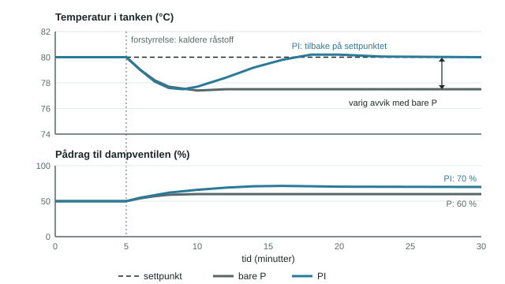

PI- og PID-regulering
En P-regulator gir ofte et varig avvik. For de fleste sløyfer i et prosessanlegg er ikke det godt nok. Derfor har nesten alle regulatorer også en I-del, og noen har en D-del i tillegg. Her lærer du hva I og D gjør, og hvilken regulator som brukes hvor.
Problemet med bare P
På siden P-regulering så du at en P-regulator bare gir et annet pådrag enn arbeidspunktet når det er et avvik. Trenger prosessen 70 % damp, men arbeidspunktet er 50 %, blir det stående et avvik. Tanken legger seg for eksempel på 72,5 °C i stedet for 80 °C.
En erfaren operatør ville ikke godtatt det. Hun eller han ville sett at det fortsatt var for kaldt, og åpnet dampventilen litt til. Og litt til, helt til temperaturen var tilbake på 80 °C. Det er akkurat det I-delen gjør.
I-delen fjerner det varige avviket
I står for integral, som betyr at noe summeres opp over tid. I-delen legger sammen avviket minutt for minutt. Så lenge det er et avvik, fortsetter I-delen å endre pådraget, litt etter litt:
- Er det for kaldt, åpner I-delen ventilen mer og mer.
- Er det for varmt, struper I-delen ventilen mer og mer.
- Først når avviket er null, slutter I-delen å endre pådraget. Da står ventilen akkurat der prosessen trenger den.
I-delen finner altså selv det riktige pådraget. Derfor blir det ikke noe varig avvik. En regulator med P-del og I-del kalles en PI-regulator.

Integraltid
Hvor raskt I-delen endrer pådraget, stilles inn med integraltiden (Ti), som oftest i minutter eller sekunder. Integraltiden er den tiden I-delen bruker på å legge til like mye pådrag som P-delen ga, hvis avviket holder seg likt.
- Kort integraltid gir en sterk I-del som endrer pådraget raskt.
- Lang integraltid gir en svak I-del som endrer pådraget sakte.
Noen styresystemer oppgir I-delen som «repetisjoner per minutt» i stedet. Det er det omvendte: repetisjoner per minutt = 1 delt på integraltiden i minutter. Integraltid 5 minutter blir 0,2 repetisjoner per minutt. Et stort tall betyr da en sterk I-del.
Oppgave: En PI-regulator har forsterkning \( K_p = 2 \) og integraltid \( T_i = 5 \) minutter. Pådraget er 50 %. Plutselig oppstår det et avvik på 3 %, og vi later som det holder seg likt. Hva blir pådraget med en gang, etter 5 minutter og etter 10 minutter?
Løsning:
- P-delen reagerer med en gang: \( 2 \cdot 3\ \% = 6\ \% \). Pådraget blir \( 50\ \% + 6\ \% = 56\ \% \).
- I-delen legger til like mye som P-delen (6 %) for hver integraltid (5 minutter).
- Etter 5 minutter: \( 56\ \% + 6\ \% = 62\ \% \).
- Etter 10 minutter: \( 62\ \% + 6\ \% = 68\ \% \).
Svar: 56 % med en gang, 62 % etter 5 minutter og 68 % etter 10 minutter. I virkeligheten blir avviket mindre etter hvert som temperaturen stiger, så I-delen vokser saktere og stopper når avviket er null.
For sterk I-del
I-delen har også en ulempe. Den fortsetter å øke pådraget så lenge det er avvik, også mens prosessen er på vei tilbake. Er I-delen for sterk, har den rukket å åpne ventilen for mye når måleverdien når settpunktet. Måleverdien skyter over, og prosessen kan begynne å svinge, akkurat som med for stor forsterkning.
Det samme kan skje hvis ventilen står helt åpen en stund uten at avviket blir borte, for eksempel ved oppstart. I-delen vil da gjerne fortsette å vokse, selv om ventilen ikke kan åpne mer. Når prosessen endelig tar seg opp, skyter den langt over. Dette kalles integratoroppvinding, på engelsk windup. De fleste moderne regulatorer har en sperre mot dette (anti-windup), men det er lurt å vite at det kan skje.
D-delen bremser i tide
D står for derivat, som betyr hvor fort noe endrer seg. D-delen ser ikke på hvor stort avviket er, men på hvor fort det endrer seg.
Tenk deg at temperaturen i tanken stiger raskt mot settpunktet. P-delen og I-delen gir fortsatt mye damp, fordi det ennå er for kaldt. D-delen merker at temperaturen stiger fort, og struper dampen litt før settpunktet er nådd. Den virker som en brems som hindrer at måleverdien skyter over.
Hvor sterk D-delen er, stilles inn med derivattiden (Td). Lang derivattid gir sterk D-del. Står derivattiden på null, er D-delen slått av. En regulator med alle tre delene kalles en PID-regulator.
Hvorfor D-delen brukes lite
D-delen reagerer på alle raske endringer i måleverdien, også på små, tilfeldige hopp som ikke betyr noe. Slike hopp kalles støy. Mange mengdemålinger og nivåmålinger har mye støy, for eksempel fordi væsken bølger eller strømmer urolig. Da får D-delen ventilen til å rykke fram og tilbake hele tiden.
D-delen er mest nyttig i langsomme prosesser med lite støy, som temperatur i store tanker og reaktorer. De fleste regulatorer i et prosessanlegg er derfor PI-regulatorer.
P, I og D sammen
I en PID-regulator regnes de tre delene ut hver for seg og legges sammen til ett pådrag:
\[ \text{pådrag} = \text{P-del} + \text{I-del} + \text{D-del} \]
| Del | Reagerer på | Fordel | Ulempe hvis den er for sterk |
|---|---|---|---|
| P | Hvor stort avviket er nå | Reagerer med en gang | Svingninger. Alene gir den varig avvik. |
| I | Avviket summert over tid | Fjerner det varige avviket | Måleverdien skyter over, og prosessen kan svinge. |
| D | Hvor fort avviket endrer seg | Bremser før måleverdien skyter over | Ventilen rykker fram og tilbake på grunn av støy. |
En enkel huskeregel: P ser på nå, I ser på det som har vært, og D prøver å se hva som kommer.
Hvilken regulator brukes hvor?
| Sløyfe | Vanlig regulator | Hvorfor |
|---|---|---|
| Mengde | PI | Rask prosess med mye støy. D-del gir uro. |
| Trykk | PI | Settpunktet må holdes uten varig avvik. |
| Nivå i buffertank | P eller svak PI | Et lite avvik gjør ikke noe. Jevn strøm ut er viktigere. |
| Temperatur | PI eller PID | Langsom prosess. D-delen kan hindre at temperaturen skyter over. |
Tabellen viser det vanlige, ikke en fast regel. Hvilken regulator og hvilke innstillinger som er best, avhenger av prosessen. Innstillingene bestemmes av instrumentteknikere eller prosessingeniører når sløyfa settes i drift.
Pådraget forteller deg noe
Fordi I-delen fortsetter å justere til avviket er borte, er pådraget fra en PI-regulator et godt bilde på hva prosessen trenger. Det kan du bruke når du følger med på anlegget:
- Pådraget har ligget rundt 60 % i flere uker, men har nå krøpet opp til 85 %. Prosessen trenger mer enn før. Kanskje har det kommet belegg på varmespiralen, så varmen går dårligere over til væsken, eller damptrykket er lavere enn før.
- Pådraget står på 100 % og avviket blir ikke borte. Regulatoren har gjort alt den kan. Feilen er et annet sted: for lite damp, en ventil som henger, eller en måler som viser feil.
En PI-regulator skal holde mengden råstoff inn til en reaktor på 12,0 m³/h. Måleverdien er 10,5 m³/h, og pådraget til ventilen har sakte steget til 100 % i løpet av en halvtime.
Slik tenker du:
- Avviket er positivt, så det strømmer for lite. I-delen har åpnet ventilen mer og mer, slik den skal.
- Ventilen står helt åpen, men mengden når ikke settpunktet. Regulatoren kan ikke gjøre mer.
- Sjekk det som kan begrense strømmen: Går pumpa som den skal? Er det et filter som er i ferd med å gå tett? Er nivået i tanken pumpa suger fra, for lavt?
- Sjekk at ventilen faktisk er åpen ute i anlegget, og at mengdemåleren viser riktig.
- Meld fra til skiftleder, og skriv det i skiftloggen.
Det du lærer: Et pådrag som står fast på 0 % eller 100 %, betyr at sløyfa har nådd grensen sin. Da må du lete etter årsaken i prosessen eller utstyret, ikke i regulatoren.
- Før du setter en regulator tilbake fra manuell til auto, sjekk at måleverdien er i nærheten av settpunktet. Er avviket stort, kan regulatoren gjøre et kraftig utslag på ventilen.
- Følg med på trenden etterpå til prosessen har roet seg.
- Innstillingene for P, I og D skal bare endres av dem som har ansvar og opplæring for det, etter bedriftens prosedyre.
Test deg selv
Hva gjør I-delen i en PI-regulator?
- Reagerer på hvor fort avviket endrer seg
- Fortsetter å endre pådraget så lenge det er et avvik, og fjerner slik det varige avviket
- Gir et fast arbeidspunkt på 50 %
I-delen summerer avviket over tid. Den slutter først å endre pådraget når avviket er null. Derfor blir det ikke noe varig avvik.
Hva skjer hvis I-delen er for sterk (integraltiden for kort)?
- Det blir et stort varig avvik.
- Måleverdien skyter over settpunktet, og prosessen kan begynne å svinge.
- Regulatoren går over i manuell.
En for sterk I-del har åpnet ventilen for mye når måleverdien når settpunktet. Da skyter den over, og prosessen kan svinge.
Hva reagerer D-delen på?
- Hvor stort avviket er
- Hvor lenge avviket har vart
- Hvor fort avviket endrer seg
D-delen ser på hvor fort måleverdien endrer seg, og bremser før den skyter over settpunktet.
Hvorfor brukes D-delen sjelden i mengderegulatorer?
- Fordi mengde ikke kan reguleres
- Fordi mengdemålinger ofte har mye støy, som får D-delen til å rykke i ventilen
- Fordi mengderegulatorer alltid står i manuell
D-delen reagerer på alle raske endringer, også støy. I raske prosesser med urolige målinger, som mengde, gir det en urolig ventil. PI er derfor det vanlige for mengde.
En PI-regulator står i auto. Pådraget har stått på 100 % i en halvtime, og avviket blir ikke borte. Hva betyr det?
- Regulatoren er stilt inn feil og må tunes.
- Alt er i orden. Det tar bare tid.
- Sløyfa har nådd grensen sin. Årsaken må letes etter i prosessen eller utstyret.
Regulatoren har åpnet ventilen helt og kan ikke gjøre mer. Sjekk for eksempel om ventilen faktisk er åpen, om pumpa går, om noe er tett, eller om måleren viser feil.
Ordliste
| Begrep | Forklaring | Engelsk |
|---|---|---|
| I-del | Den delen av regulatoren som summerer avviket over tid og endrer pådraget så lenge det er et avvik. Fjerner varig avvik. | integral action |
| PI-regulator | Regulator med P-del og I-del. Den vanligste regulatoren i prosessanlegg. | PI controller |
| integraltid | Innstilling (Ti) for hvor raskt I-delen endrer pådraget. Kort integraltid gir sterk I-del. | integral time (Ti) |
| integratoroppvinding | At I-delen fortsetter å vokse mens ventilen allerede står helt åpen eller helt stengt, slik at måleverdien skyter langt over når prosessen tar seg opp. | integral windup |
| D-del | Den delen av regulatoren som reagerer på hvor fort avviket endrer seg, og bremser før måleverdien skyter over settpunktet. | derivative action |
| derivattid | Innstilling (Td) for hvor sterk D-delen er. Derivattid null betyr at D-delen er slått av. | derivative time (Td) |
| PID-regulator | Regulator med P-del, I-del og D-del. De tre delene legges sammen til ett pådrag. | PID controller |
| støy | Små, raske og tilfeldige hopp i en måleverdi som ikke skyldes virkelige endringer i prosessen. | noise |
Les mer
- P-regulering forklarer forsterkning, svingninger og varig avvik.
- SCADA og DCS i emnet Styresystemer viser hvor regulatorene ligger, og hvordan operatøren setter dem i auto eller manuell.
Om kildene: Teksten, eksemplene og figuren på denne siden er laget for dette nettstedet. Siden bygger på undervisningsopplegg i kjemiprosess- og laboratoriefag ved Sauda vgs, som er utarbeidet med utgangspunkt i blant annet Kjemien stemmer, Laboranten og åpne nettkilder.